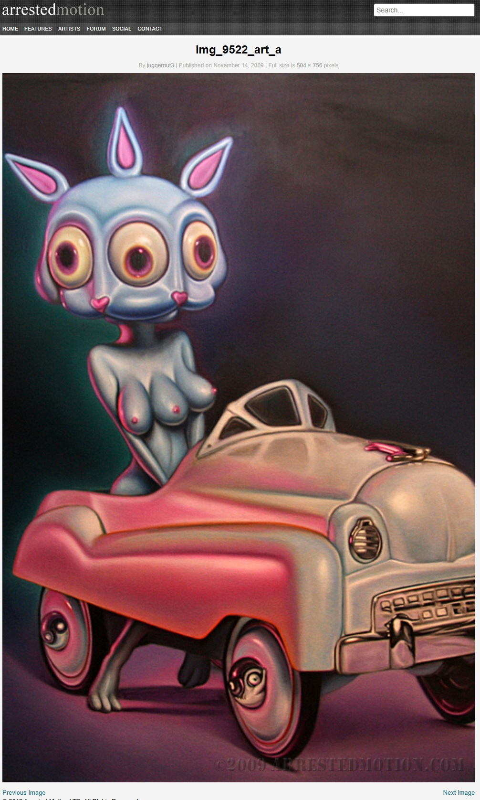
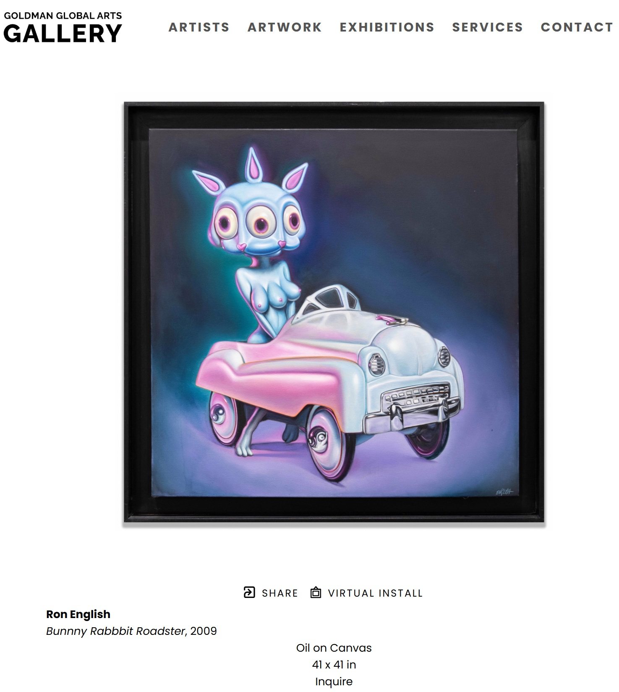

Exhibitions
Immortal Underground, Opera Gallery, New York, New York, US, November 12–December 2, 2009.
Literature
Ron English, Status Factory: The Art of Ron English (San Francisco: Last Gasp of San Francisco, 2014), p. 51. ISBN 978-0867197891.
Ron English, Fauxlosophy: The Art of Ron English (San Francisco: Last Gasp, 2016), p. 92. ISBN 978-0867196566.
Notes
This work appears in installation photographs published in “Openings: Ron English – “Immortal Underground” @ Opera Gallery,” Arrested Motion, November 15, 2009, available here, accessed April 10, 2026.
It is also documented on GGA Gallery’s artwork page as Bunnny Rabbbit Roadster, where it is listed as a 2009 work, available here, accessed April 17, 2026.
Ancillary Documentation

